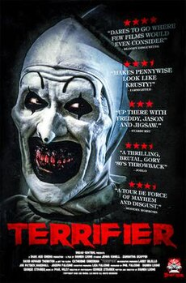
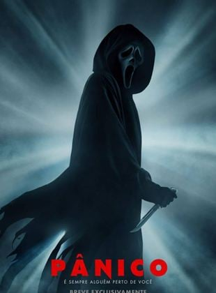

ANNABELLE | TERRIFIER | PÂNICO
ANNABELLE
 O sucesso Invocação do Mal começa com a primeira entrevista feita por Ed e Lorraine Warren (Patrick Wilson e Vera Farmiga) às estudantes de enfermagem Debbie (Morganna May) e Camilla (Amy Tipton), que falam a respeito da misteriosa boneca que estava lhes causando problemas. Acreditava-se que a boneca estava, de alguma forma, amaldiçoada. A cena termina com Ed Warren dizendo que irá ajudar as meninas. No decorrer do filme, a boneca reaparece dentro de um vidro e sua história é contada rapidamente aos personagens pelo casal Warren. Quando Annabelle se inicia, a mesma cena se repete, com Debbie (novamente vivida por Morganna May) falando da boneca. Então, logo se imagina que a fita contará a história da futura enfermeira, juntamente com o trabalho do casal Warren no caso, (considerado baseado em fatos reais), certo? Errado.
O sucesso Invocação do Mal começa com a primeira entrevista feita por Ed e Lorraine Warren (Patrick Wilson e Vera Farmiga) às estudantes de enfermagem Debbie (Morganna May) e Camilla (Amy Tipton), que falam a respeito da misteriosa boneca que estava lhes causando problemas. Acreditava-se que a boneca estava, de alguma forma, amaldiçoada. A cena termina com Ed Warren dizendo que irá ajudar as meninas. No decorrer do filme, a boneca reaparece dentro de um vidro e sua história é contada rapidamente aos personagens pelo casal Warren. Quando Annabelle se inicia, a mesma cena se repete, com Debbie (novamente vivida por Morganna May) falando da boneca. Então, logo se imagina que a fita contará a história da futura enfermeira, juntamente com o trabalho do casal Warren no caso, (considerado baseado em fatos reais), certo? Errado.
A história volta ainda mais no tempo para contar um fato que se passa antes da boneca ir para as mãos de Debbie, e, consequentemente, antes do casal Warren entrar em cena, o que, de certo modo, decepciona. Porém, o episódio em questão nos apresenta o jovem casal Mia (Annabelle Wallis – onde qualquer semelhança é uma estranha coincidência) e John (Ward Horton), prestes a ter seu primeiro filho, passando por um trauma muito forte quando sua casa é invadida por Annabelle Wallis (Tree O’Toole) e seu namorado (Trampas Thompson), que fazem parte de uma seita satânica. O casal assassino tinha acabado de matar os pais de Annabelle e passaram a atacar Mia que teve sua barriga esfaqueada. Com a chegada da polícia, Annabelle acaba morrendo no quarto do bebê, tendo parte de seu sangue derramado dentro de uma boneca que estava lá. Assim, a família, que agora possui um bebê saudável passa a experimentar em sua casa estranhos acontecimentos, encerrando um ótimo primeiro ato.
É uma pena que o filme perde muito de seu fôlego. Por conta das experiências vividas na casa onde ocorreram os assassinatos, Mia e John se mudam para um apartamento, porém a televisão insiste em dar defeito, as portas continuam a bater e a boneca insiste em aparecer numa posição diferente da que foi deixada. É o bastante para Mia buscar conhecimento sobre entidades, demônios e tudo relacionado ao ocultismo numa livraria perto de sua casa. Lá, ela é auxiliada por Evelyn (Alfre Woodard), dona da livraria e com a cabeça bem aberta por já ter passado por experiências estranhas. E quando descobrem a real ameaça, decidem procurar a ajuda do padre Perez (Tony Amendola), conhecido do casal por ser o padre da igreja que frequentam.
Talvez pelo fato de toda a equipe técnica de Invocação estar diretamente envolvida (emocionalmente, inclusive) com a produção de Velozes e Furiosos 7, a direção ficou a cargo de John R. Leonetti, responsável pela fotografia de Invocação, sendo o único a retornar juntamente com o responsável pela trilha sonora da franquia, Joseph Bishara. Com isso, o roteiro escrito pelo estreante na tela grande Gary Dauberman não se sustenta, trazendo soluções manjadas e experiências idem, vindo, inclusive a adaptar, de certa forma, o final de um grande clássico do horror. Pelo menos, deixa uma ponta para o aparecimento do casal Warren em um eventual segundo Annabelle, contando então a história da estudante de enfermagem mencionada no começo deste texto. Não custa sonhar.
Apenas a título de curiosidade, recomenda-se uma pesquisa na internet sobre a boneca Annabelle, bem como do casal Warren. É possível, inclusive, visitar o local onde a boneca está guardada na caixa de vidro, além de outros artefatos recolhidos pelos Warren nos seus 50 anos de investigações paranormais. Também é possível encontrar gravações reais de entidades se comunicando com os Warren em algumas de suas investigações.
Desta forma, chega-se à conclusão que Annabelle foi mais uma tentativa do estúdio faturar algum dinheiro com o sucesso de Invocação, enquanto o diretor James Wan, ao terminar VF7, decide ou não fazer a sequência de seu maior sucesso.
TERRIFIER
Um homem está assistindo a uma pequena TV onde Monica Brown, uma apresentadora de talk show, entrevista uma mulher severamente desfigurada que é a única sobrevivente de um massacre ocorrido no Halloween anterior. Brown menciona que o corpo do assassino, conhecido apenas como "Art, o Palhaço", desapareceu do necrotério, sugerindo que ele ainda está vivo. No entanto, a mulher desfigurada insiste que o viu morrer. O homem chuta furiosamente a TV, quebrando o vidro, e enche um saco de lixo com objetos laminados. Após a entrevista, Monica fala com o namorado ao telefone e faz comentários depreciativos sobre a entrevistada por causa de sua aparência. Depois que ela desliga, a mulher desfigurada, que a estava espionando, ataca Monica e arranca seus olhos, aparentemente matando-a, e ri loucamente.
Na noite de Halloween, duas amigas, Tara e Dawn, saem de uma festa de Halloween e voltam bêbadas para o carro de Dawn, onde percebem um homem estranho em uma fantasia de palhaço. O homem, Art, o Palhaço, as segue até uma pizzaria próxima. Depois de um curto período de tempo, o dono do restaurante escolta Art do local por espalhar suas próprias fezes por todas as paredes do banheiro. As meninas descobrem que um dos pneus do carro de Dawn foi cortado, e Tara chama sua irmã Vicky para vir buscá-los. Enquanto espera, Tara pergunta a um funcionário do controle de pragas, Mike, se ela pode entrar no prédio abandonado em que ele está trabalhando para usar o banheiro. Uma vez lá dentro, Tara encontra uma mulher iludida (creditada como "Cat Person"), que acredita que a boneca que ela carrega é seu bebê. Art retorna à pizzaria, onde mata e mutila os dois trabalhadores antes de sequestrar Dawn.
Tara logo encontra Art dentro do prédio. Ele a persegue pela garagem do mecânico interno e a esfaqueia com um bisturi. Ela tenta alertar Mike, mas Art a droga. Tara acorda amarrada a uma cadeira, e Art revela Dawn, suspensa de cabeça para baixo no teto. Ele força Tara a ver Dawn sendo serrada ao meio com uma serra. Tara escapa, mas Art saca uma arma e atira nela até a morte. A Cat Lady testemunha isso e implora a Mike para chamar a polícia. Mike a descarta como louca, mas Art logo o deixa inconsciente com um martelo. A Cat Lady descobre Art embalando sua boneca. Em um apelo pelo retorno de seu "filho", ela tenta mostrar compaixão maternal a Art, embalando-o.
Vicky chega para levar Tara e Dawn para casa, mas é atraída para o porão por Art. Lá, ela descobre o que ela acredita ser Tara ferida, mas na verdade é Art, que mutilou severamente a Cat Lady e está usando seu couro cabeludo e seios. O colega de trabalho de Mike chega procurando por ele, mas é decapitado por Art. Vicky escapa de Art, mas para de chorar ao encontrar o cadáver de sua irmã. Art então a ataca com um gato improvisado de nove caudas, mas Mike chega de repente e deixa Art inconsciente. Os dois fogem e ligam para o 9-1-1, mas antes que possam escapar, Art aparece e mata Mike. Vicky se retira para uma garagem, e Art entra pela porta com uma caminhonete, causando mais ferimentos em Vicky. Enquanto ela fica impotente, Art começa a comer seu rosto. A polícia chega, mas Art dá um tiro na boca com uma pistola antes que os policiais possam prendê-lo.
O corpo de Art é levado para um necrotério, junto com os corpos de suas vítimas falecidas. Quando o legista abre o saco do corpo de Art, Art o reanima e o estrangula até a morte. Um ano depois, Vicky recebe alta do hospital após a reabilitação dos ferimentos infligidos pelo Art; ela é revelada como a mulher severamente desfigurada da cena de abertura do filme e, portanto, os eventos de todo o filme ocorreram no ano anterior.
PÂNICO
Scream (no Brasil, Pânico / em Portugal, Gritos) é uma série de filmes americana de suspense e terror. Criada por Kevin Williamson e Wes Craven, os filmes pertencem ao subgênero slasher e utilizam de metalinguagem para criarem situações e criticarem outros filmes de terror e até mesmo os filmes de terror da própria série. A série de filmes Scream apresenta uma longa lista de personagens, primeiramente criadas por Williamson, com contribuições de Craven e Ehren Krueger. A série é composta por seis filmes e estrelada por Neve Campbell, Courteney Cox e David Arquette, ela arrecadou mais de 910 milhões de dólares em bilheterias do mundo todo. O primeiro filme foi lançado em 20 de dezembro de 1996, seguido pelo segundo filme em 12 de dezembro de 1997 e pelo terceiro filme em 4 de fevereiro de 2000. O quarto filme foi lançado onze anos depois, em 15 de abril de 2011. 11 anos depois, em janeiro de 2022, foi lançado o quinto filme da franquia, intitulado apenas com o nome original, Scream (Pânico). Em março de 2023, o sexto filme da franquia foi lançado.
Os filmes seguem a personagem Sidney Prescott (Neve Campbell), uma jovem que se torna vítima de uma sucessão de assassinos que adotam o disfarce de Ghostface para perseguir e atormentar suas vítimas. Em todos o filmes Sidney recebe apoio da repórter Gale Weathers (Courteney Cox) e do vice-xerife Dewey Riley (David Arquette), além do filmes-geek Randy Meeks (Jamie Kennedy; até o terceiro filme). A adaptação para a televisão da série de filmes foi lançada pela MTV em 30 de junho de 2015.
O roteiro original de Kevin Williamson foi comprado pela Miramax e desenvolvido sob o rótulo Dimension Films por Bob e Harvey Weinstein, que recrutaram Wes Craven para dirigir, que por sua vez recrutou o compositor Marco Beltrami para trilha sonora instrumental do filme. Essa equipe esteve envolvida em cada filme da série, embora Kevin Williamson tenha sido obrigado a assumir um papel menor para Scream 3, onde escreveu apenas um breve resumo do enredo devido aos seus compromissos com outros projetos, com Ehren Kruger substituindo-o como roteirista.
A violência presente na série resultou em conflitos com a Motion Picture Association of America e meios de comunicação relativos a censura, o que terminou com a redução da violência e do splatter em Scream 3, quando o Massacre de Columbine trouxe foco maior sobre a influência da mídia na sociedade. Scream tornou-se diferenciado de outras produções usando atores famosos, que na época eram raros em filmes de terror, mas graças ao sucesso da série foi se tornando mais comum.
A série recebeu críticas positivas e significativas dos críticos, Scream foi elogiado por revitalizar o gênero de terror no final dos anos 90 pela combinação de um filme tradicional slasher com humor, consciência do clichê de filmes de terror e um enredo inteligente. A série de filmes é a sexta de maior bilheteria no mundo em seu gênero.[1] A série de filmes já ganhou vários prêmios, incluindo o Prêmio Saturno de Melhor Atriz em cinema (Neve Campbell; 1996) e o MTV Movie Awards de Melhor Filme (Scream; 1997) e Melhor Atuação Feminina (Neve Campbell; 1998).